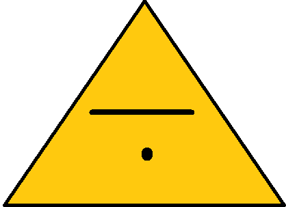

Oppgaver
Video

Fyll det tomme feltet, trykk så =
=
Nettleseren støtter ikke video.
Oppgave!
Få trekanten til å regne ut 12 delt på 4. Trykk deretter knappen!
Du skal ikke skrive svaret!
Skriv tall to steder, trykk så =
(Klikk her for å besvare)